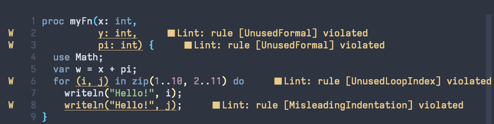
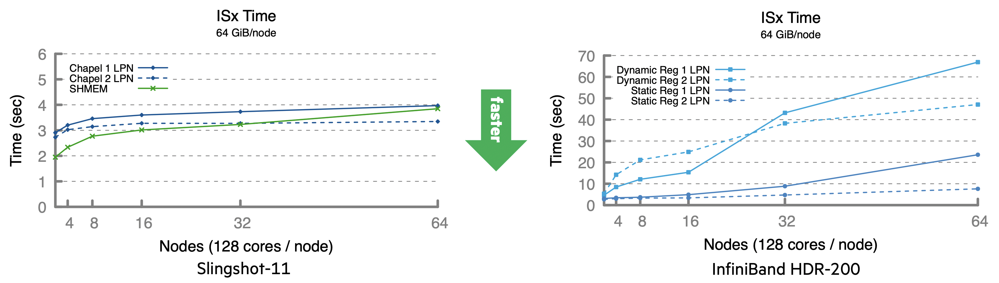

The Chapel developer community is proud to announce the release of Chapel version 1.33! Highlights of this release include brand new tools, broader support for co-locales, and further steps toward Chapel 2.0. As always, to obtain a copy, see the Downloading Chapel page on the Chapel website.
Highlights of Chapel 1.33
Our Next Release Candidate for Chapel 2.0
Continuing from where we left off in September, Chapel 1.33 constitutes our next (and potentially final?) release candidate for Chapel 2.0. If the Chapel 2.0 concept is new to you, be sure to check out our September release announcement for an introduction.
For 1.33, we have updated Chapel’s binary
serializer
to address user concerns about the way certain types were being
represented in version 1.32. Specifically, that release replaced
our legacy binary IO capability with a serialization-based approach
and, in doing so, made some changes to certain types by having them
embed additional structure, like the length of a string/bytes value,
or whether or not a class variable was storing nil. This
additional meta-data was unpopular with users, causing us to back
out those elements and revert to having binary serialization use an
unstructured format. Meanwhile, for those who preferred the
additional structure, we moved that support into a new
‘ObjectSerialization’
package that we intend to make even more sophisticated and capable
over time—e.g., capable of checkpointing and restoring complex data
structures.
The other major stabilization-related improvement in Chapel 1.33 is
a significant clean-up to the ‘Random’
module,
which was considered unstable in version 1.32 due to lack of time
and recent attention. In version 1.33, we have moved the antiquated
NPB random number generator out into a new package
module
and streamlined other aspects of the Random interface, removing
the blanket unstable warning. Additional improvements are still in
the works, and we currently expect the Random module to be stable
in the next release.
At present, Chapel 2.0 is slated to be released in March 2024, barring surprises or an outpouring of user concerns with version 1.33. As with version 1.32, we encourage users who are relying on Chapel to let us know whether there are aspects of its current definition that they feel uneasy stabilizing as-is. For further information on how you can help us with this effort, please refer to Lydia Duncan’s recent call to action on the HPE Developer blog.
New Tools
Chapel 1.33 features three new tools that users may be interested in incorporating into their workflow.
The first of these was developed to support the request for user feedback mentioned just above. It can be used to summarize the unstable features that a Chapel program is using in an anonymized way. Our hope is that this will simplify the process of having users take stock of which unstable features they’re using, allowing them to either advocate for them to be stabilized sooner, or to switch to more stable features. For more information about how to apply this tool to your programs, please see its documentation. And, as a fun fact: this tool is written in Chapel itself!
The next tool is chplcheck, a prototype linter that checks Chapel
code against a number of style rules, many of which reflect
conventions that we have been adopting within our standard modules
as part of the Chapel 2.0 stabilization process. The various rules
can be disabled or enabled, so that you can pick a mix of them that
correlate to the style you’ve adopted for your Chapel project. For
convenience, chplcheck supports the Language Server Protocol
(LSP), permitting it to be integrated into your favorite
LSP-compatible editor. For example, the following screenshot shows
a snippet of Chapel code within Neovim along with the chplcheck
messages that it generates:

One of the very cool aspects of chplcheck is that it leverages our
standalone Dyno front-end compiler library via a new set of Python
bindings
that have been developed as a means of accessing its features. The set of
chplcheck rules is also extensible, allowing developers to create
their own rules (and, ideally, contribute them back to the
community)! For more information, please refer to the chplcheck
documentation.
The third tool can be used to find a module’s public symbols that
are lacking documentation. This has been useful to us in validating
our documentation for Chapel 2.0, but will also be useful to
programmers who are creating Chapel libraries or applications and
relying upon chpldoc-based documentation. In Chapel 1.33, find
the tool in tools/chpldoc/findUndocumentedSymbols. For
information on its use, run findUndocumentedSymbols --help or see
the comments at the top of
tools/chpldoc/findUndocumentedSymbols.py.
Improved Co-locale Support and Performance Studies
In the 1.32 release announcement, we described Chapel’s recently
added support for co-locales, in which multiple locales can be
mapped to a single compute node in order to take advantage of
multiple NICs, or to improve NUMA behavior by giving each locale its
own socket. In Chapel 1.33, we have extended support for this
feature to the gasnetrun_* and slurm-gasnetrun_* families of
launchers.
Since Chapel 1.32, we also gathered an extensive set of Chapel performance graphs for various benchmarks running on Slingshot-11 and InfiniBand systems. Many of these results demonstrate the benefits of co-locales. For example, the following pair of graphs demonstrates the execution-time benefits that running 2 locales per node can have for the ISx benchmark running on (single-NIC) Slingshot-11 and InfiniBand HDR-200 systems with dual-socket AMD Milan compute nodes.

To browse other performance graphs gathered during this survey, see the SS-11 / IB Performance Status deck of the Chapel 1.31 / 1.32 Release Notes. For further information on using co-locales with Chapel, please refer to their online documentation.
And more…
Beyond the highlights mentioned here, some other notable features in Chapel 1.33 include:
-
improvements to Chapel’s GPU support in terms of generality and library routines,
-
a new prototype breakpoint routine that can be used to kick a Chapel program into a debugger, and
-
a new fma() routine that supports fused multiply-add instructions.
For a more complete list of changes in Chapel 1.33, please refer to its CHANGES.md file.
For More Information
For questions about any of the changes in this release, please reach out to the developer community on Discourse. As always, we’re interested in feedback on how we can help make the Chapel language, libraries, implementation, and tools more useful to you in your work.
And thanks to everyone who contributed to the Chapel 1.33 release!